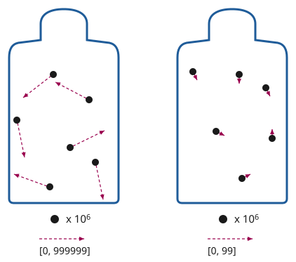

芬和泽下了巴士，沿着训民街往前走。
训民街是帕佛盖都比较热闹的工商业街之一。街道两侧，招牌上的彩灯闪个不停，宣传着各式各样的电子产品：手持终端、手表、算力盒、照明、电池、传感器等等。店铺之间夹着小型工厂，造着各种精密器件，有几处甚至在生产计算机芯片。沿街的建筑都只有一两层高，不少招牌就架在通往地下的楼梯口上。
左边有两家紧挨着的店。一家卖各式传感器——摄像头、麦克风、生物与化学传感器、空气质量监测器，当然还有专门用来探测传感器的传感器。另一家卖隔信箔——一种常见的材料，很多房间默认就铺它，用来阻断无线信号。隐私与透明，监控与反监控——泽国人保平安，靠的就是这一对矛盾。
两家店之间，一块招牌用大字写着：
“地下安全之所。”
“gie fe kiu kai ci bin hu。”泽在心里默念。“扎根，无首。”这是泽国半个世纪以来一直用来生长、并保住自身的策略。
芬和泽继续往前走，享受着车道与人行道之间树下的阴凉。
一架无人机嗡嗡地从头顶飞过。片刻之后，他们的手表轻轻震了一下——软件跑完了认证协议，确认来者是友方的安保无人机：出自通过了全部检查的批次，运行的是友方算法。整串流程——飞过、认证、确认——在几百毫嘀嗒内就走完了，芬和泽几乎都没察觉到发生过什么。
“昨晚那场民本棋下得怎么样？”芬问。
“我拿了第三名！终于琢磨出一种墙形结构，能把他们的滑翔机原样弹回去，把他们的地盘搅得一团糟。”
“你呢？”
“在‘无聊学校’备考地理呢。”
“很无聊吧？”
“嗯，我们在讲联合城邦，老师就让我们死记硬背那些共治投票比例。自由城在德文维尔占5%的投票权，德文维尔在红郡占15%，红郡又……”
“那套制度到底管不管用，你有什么新看法吗？”
“哪有啊，批判性治理研究要上大学才讲呢。”
“就像化学要上高中才讲那样？”
芬笑了。“他们现在打算在去中心化大学用10天讲完一整年的批判性治理研究？”
去中心化大学（DU），泽国语里叫 dzu hu sun du——就是他们要去的地方。泽想起得确保准时到，便看了一眼手表。
“时间刚跳到69,000。教室的准确位置应该马上就会解密、广播出来。”
手表震了一下。泽收到一条通知。
| 文贵街1842号 | TEI 70000 | ✓ |
|---|
泽停下脚步，把手表给芬看。
“嗯？黄色的对勾。看来他们换了一套新的密码学证明系统，今天到了课上，记得把咱们的码同步一下。”
“又换？”
“大概吧。听说北极帝国越来越咄咄逼人，所以我们在加强安保。”
“行吧。总之它上面写着文贵街1842号。我们……刚经过训民街1990号。那它在我们后头。”
“那我们就在这儿左转到二十街，再左转到文贵街？”
泽在心里把账算了一遍。有名字的街之间相隔200米，从训民街到文贵街隔了4条街，也就是800米。门牌号本身就是米数，所以从2000号走到1842号要走158米。800加158……一共要走958米。课在70,000嘀嗒开始，所以他们还剩不到1,000嘀嗒，说白点就是10分钟。慢步走是一嘀嗒一米，而芬和泽走得快。所以他们来得及。
“行！”
两人快步走了起来，确保能提前赶到。
几分钟后，他们到了。“哎呀，芬，你可算来了！”一个年轻女人喊道。芬和泽被领着走下两段有点积灰的楼梯。
到了底层，另一个男人正等着，拦住了他们。“计划变了，改在负一层正对面的房间了。”
泽叹了口气。
4个人又爬上一层楼梯，进了一间大屋子，并排坐在一排椅子上。
四壁糊着厚厚一层隔信箔，糊得很仓促。箔面之上是泽国经典的那种审美：可爱的卡通动物在摆弄电子器件和化学实验器材，背景是绿树和蓝天。屋子前方，左边一只充气卡通猪，右边一只仓鼠。猪用左手举着一个计算器，仓鼠用右手举着一小瓶绿色液体。两只空着的手一起举起一张海报，上面是去中心化大学的校训：
“一人向学，一人得自由；一国向学，一国得强盛。”
他们身后，讲师走了进来，关上了门。泽看了一眼手表。70,001。
“欢迎来到物理课。”讲师说。
“今天，我要试着讲一个很重要的话题，我觉得几乎所有人都把它搞混了：热力学。”
比较专心的学生收起了手持终端，不再说话，准备听讲。其他人起先还在聊，但很快就安静下来。
泽旁边的女生把手伸到桌子边缘底下，眼睛没看，手指顺着摸了一遍——这是习惯，不是在认真搜查。另一个学生习惯性地把手持终端在屋里挥了一圈，想捕捉到任何未知的电子设备。没有人说什么。从来没有人说什么。
“在座有谁听过‘熵’这个词——在信息论或密码学的语境里？”
大约四分之三的学生举了手。
“那在座有谁听过‘熵’这个词——在热力学第二定律的语境里？就是说它永远在增大，其中一种表现是热总是从热的地方流向冷的地方，绝不会反过来？”
几乎每个学生都举了手。熵是科幻作品最喜欢的题材。
“那在座有谁觉得自己能讲清这两者之间的联系？”
没有人举手。
“好，那我们开始。”
讲师按了一下手表上的按钮，前墙上出现了一张幻灯片：

“想象我们有两罐气体。每罐有100万个分子。但左边那罐里，分子的运动速度快得多。假设左罐里分子的速度可以用6位数表示，从0到999,999。而右边那罐里分子运动得慢，速度可以用6位数表示，从0到99。”
“谁能告诉我，要把左罐里发生的一切完整表示出来，需要多少位数字？假设你已经知道那是气体，知道有100万个分子，唯一的自由变量就是速度。”
“600万！”大约10个学生齐声喊道。
“很好。那右边那罐呢？”
“200万！”
“我们来梳理一下。从你的角度，作为观察者，你知道这两罐都是气体，知道是哪种气体，也知道有100万个分子。但你不知道每一个分子的速度。那么对左边那罐来说，你所不知道的信息量是……？”
“600万位数字！”
“那右边呢？”
“200万位数字！”
“所以一共是800万位数字，是你所不知道的信息。那么，如果我们把两罐放到一起，让气体混合，会怎么样？关于速度，我们会知道些什么？”
泽举起了手。
“好，你来说？”
“分子会随机地互相碰撞。等它们安定下来，因为能量守恒，速度最后会落在中间，也就是0到50万之间。”
“对，非常好！严格说来，能量与速度的平方成正比，我们也可以争论这些速度该怎么表示，顺带一提，我们也完全忽略了位置，但我们就简化一下，说0到50万吧。”
讲师又点了一下手表。下一张幻灯片。

“那么，要表示我们对这个新系统所不知道的信息，需要多少位数字？”
另一个学生举起了手。
“请讲。”
“从0到50万，比5位多，又不到6位；如果按对数算，每个分子大约是5.7位。”
“那总数是多少？”
“1140万位数字。”
“非常好！所以结论是：把两罐气体混在一起，我们损失了知识。我们对气体的了解比之前更少了。而且我们可以量化损失了多少知识：是340万位数字。”
“我们说熵会增大、热从热处流向冷处，说的就是这个。每添进一丁点热量，把冷的东西加热所增加的未知位数，总要多于把热的东西降温同样幅度所减掉的位数，所以未知的总量只升不降。你对这些罐子能做的每一个可能的操作，平均看来，要么让总未知量不变，要么让它上升——而只要你做了任何有用的事，或者犯了任何错，它就一定会上升。这就是热力学第二定律。”
讲师停顿了一下。
“那么，我们怎么证明它？”
没有一个学生回答，但很多人似乎好奇地往前倾了倾身子。
“我们用反证法。假设我们真有一个能倒着来的神奇程序：从混合后的两罐出发——1140万位的未知量，把我们送回分开的两罐——800万位的未知量。”
泽又一次举起了手。
“我能试试吗？”
“请讲。”
“我记得我们宇宙的物理定律是完全时间可逆的，对吧？所以，如果一件事能朝一个方向做，就总能把同样的步骤倒过来跑一遍。”
“完全正确。那么，为什么到了原子层面，这种时间可逆性反而会意味着温度均衡无法逆转呢？这不矛盾吗？”
“嗯，如果我们真能把不冷不热的温度分成热的一份、冷的一份，那就能做无限的数据压缩了。”
“比如，假设你有一个1140万位数据的文件。你造一个真正完美的双罐装置，再用一把枪，把气体分子以完全正确的速度射出来。然后你用你的程序把气体重新分开，再把罐子拆开，最后测量速度。你就能得到800万位数据。”
“而且，因为我们宇宙的物理是时间可逆的，你就能把同样的事反过来做：拿那800万位数字，输进枪里，让气体分子以正确的速度射出来，把完全一样的分离程序倒着执行一遍，再测量，你就能得到原先那1140万位数字。时间反演过程的输出必须等于原过程的输入。于是我们就有了一个完全通用的办法，能把任意1140万位数据塞进800万位里。要是能做到这一点，我们就能一遍又一遍地做下去，把整个星球表示成800万位，甚至压缩得更小，用8位就搞定。而这是不可能的！”
“完全正确。换句话说，在一个物理规律时间可逆的宇宙里，你不可能让不知道的东西从多变成少。而在一个物理规律时间不可逆的宇宙里，你可以，因为你只要把所有你不知道的东西毁掉就行了。”
“简直就是北极皇帝！”泽真想喊出来。但他忍住了。把一个这么明显的笑话当众讲明白是很失礼的——半个教室的人心里大概早就想到了。讲师和学生们短暂地停了一下，品味这个笑话，咧嘴笑笑，享受了片刻的心意相通。然后讲师继续往下讲。
“但在一个物理规律时间可逆的宇宙里，总有些东西是你不知道的，而这份未知只能挪来挪去，而且注定越来越多。我们能做的最好的事，就是从不知道我们在乎的东西，变成不知道我们不在乎的东西。比如，从不懂热力学，变成不知道那些作为废热从投影仪里跑出来的分子的速度。”
“干得漂亮，孩子。你叫什么名字？”
“泽。”
“那么，泽，你答得完全正——”
旁边的房间爆出一声巨响。整间屋子都在晃。
不到一嘀嗒的工夫，一部分墙和地板轰然塌了下来。
泽反应过来时，一块碎石已经砸中了他的胳膊。
泽发现自己倒在地上，翻倒的椅子就在旁边。
他脑中闪过那个最后关头把他们改到另一间房的男人——那间房比原定要去的地方高一层。
他立刻就明白了。去中心化大学一直在做的那些额外防范——密码学、地点的突然变更、隔信箔——都不只是儿戏。而北极帝国也不只是地理课上的一个单元。这些东西是真的。
“大家都没事吧？有人受伤吗？”讲师喊道。
泽想了一会儿，琢磨胳膊这点伤值不值得喊疼。他试着把胳膊抬起、放下。胳膊没有反应。
接下来他感觉到的，是两条胳膊抓住了他，把他从地上拉起来，扶到椅子上。泽转过头。是芬——让泽松一口气的是，芬一点伤都没有。
烟灌满了房间。每个学生的手表都开始大声报警——空气质量监测只是它众多功能中的一项。学生们点了点手表，报警声很快小了下去。学生们慢慢互相搀扶着站起来，讲师则四处走动，看看有没有人伤得重、真正需要帮忙。
讲师走到泽身边，泽默默指了指自己的左臂。讲师掏出手持终端，扫了一下。屏幕底部刷出一段 AI 生成的内容。
“疼吗？”讲师问。
“有点，但撑得住。”
“看起来是骨折。今天就去医院看一下。越早去，好得越快。”
“我送你去。”芬接话。“得保证你月底那场比赛还能打。”
讲师继续往前走。屋里满是烟。空气质量警报还在响，但芬和泽能分辨出讲师在问不同的学生“你还好吗？”，有一个学生回答“我没事。”
空气过滤器开到最大功率，烟很快散了。芬和泽对视了一眼。一时间，学生和讲师都沉默着，气氛有些尴尬。
泽用没受伤的那条胳膊撑着桌子站了起来。“我想我们对这面墙的了解，比两分钟前少多了。”他开了个玩笑。
几个学生笑了，或者轻轻笑出了声。他对听众的情绪拿捏得很准。
“没有别人受伤了吧，你们都确定？”
“我没事。”大约10个人回答。
“好，我看今天的熵已经够我们受的了。回家吧。”
芬和泽在教室里比其他人多待了一阵。泽重新坐回椅子上。芬拿了把扫帚，把碎屑都推到一边。很快，就只剩他们和讲师了。
“哇，北极人越来越凶了。以前他们可不针对物理教育。”
“临时给我们换教室的那位真是个天才。那一下救了我们的命。”
“可惜，我估计从这儿往后只会更糟。”
芬和泽震惊地看着讲师。
“记住，他们的玩法，就是永远把我们的重工业和科技压在低位。让我们活着，但把我们的文明永远压在构不成威胁的水平上。”
“而我们的对策是‘gie fe kiu kai ci bin hu’：扎根，无首。用分布式制造，把我们要用的工具全造出来。让官方政府照旧运转下去——就像100年前我们输掉战争时那样，缓慢、腐败——但用密码学来匿名协调那些真正要紧的决定，不需要任何抛头露面的个人领袖来掌舵。整个去中心化大学已经在这么运转了。很快，我们大部分的发电、农业和医药也会这样。”
“这招一直很管用。经过最近这几年，我们终于差不多到了那个水平：完全不需要任何集中的重工业，也能自己站住脚。问题是，看样子他们也渐渐看明白了。”
“Dze go ba fau gie。”芬和泽齐声说，平静而倔强。
“泽国将再度崛起。”
Fin and Zei got off the autobus and walked down Hun Min street.
Hun Min street was one of the more lively commercial and industrial streets in Pafogai Du. On both sides of the street, they could see signs with colored blinking lights advertising all kinds of electronics: hand devices, watches, compute boxes, lighting, batteries, sensors and more. Among the stores were miniature factories, building various sophisticated devices and in a few places even computer chips. The buildings were all one or two storeys tall, and many signs were on top of stairways leading underground.
On the left, there were two adjacent stores. One was selling sensors of all kinds - cameras, microphones, biological and chemical sensors, air quality monitors, and of course, sensors designed to detect sensors. The other was selling anti-transmission foil - a common material used by default in many kinds of rooms, to block wireless signals. Privacy and transparency, monitoring and anti-monitoring - the duality of keeping the Dzegojan safe.
Between the two stores, a sign read in large letters:
"Underground safe place".
"gie fe kiu kai ci bin hu", Zei thought to himself. "Grow roots, no head". The strategy that Dzego had been employing for half a century to grow and stay protected.
Fin and Zei both kept walking, enjoying the shade under the trees between the road and the sidewalk.
A drone buzzed as it flew overhead. A moment later, their watches buzzed softly once their software had run the authentication protocol and confirmed that it was a friendly security drone that came from a batch that had passed all inspections and was running friendly algorithms. The whole chain of events - the flyby, the authentication, the confirmation - finished within hundreds of milli-ticks, and Fin and Zei both barely noticed that any of it had even happened.
"How was the Minpentai game last night?", Fin asked.
"I got third place! Finally figured out a wall structure that reflected their gliders right back at them, completely wreaked havoc on their territory."
"How about you?"
"Studying for the geography exam in boring school."
"Boring, I take it?"
"Yeah, we're covering the United Cities, and they're just making us memorize all the co-governance percentages. Freetown gets five percent votes in Devanvil, Devanvil gets fifteen percent votes in Redshire, Redshire gets..."
"Do you have any new opinions on how effective that whole system is?"
"Oh no, critical governance studies only becomes a topic in university."
"The same way that chemistry is a topic in high school?"
Fin laughed. "Are they gonna cover an entire year of critical governance studies in ten days in DU now?"
DU - "Decentralized University", or dzu hu sun du in Dzegoban - the place they were going. Zei remembered that they needed to make sure they got there on time, and checked his watch.
"Time just hit sixty-nine thousand. The exact location of the classroom should be getting decrypted and broadcasted any moment now."
The watch buzzed. Zei got a notification.
| MUN GUI 1842 | TEI 70000 | ✓ |
|---|
Zei stopped, and showed his watch to Fin.
"Huh, yellow checkmark. Looks like they've upgraded to a new cryptographic proof system, gotta make sure we sync our codes when we get to the lesson today."
"Again?"
"Guess so. I hear the Arctic Empire is getting more aggressive, so we're stepping up security."
"Okay, anyway, it says Mun Gui 1842. We... just passed 1990 Hun Min. So it's behind us."
"Let's just turn left here on 20th, and then left again on Mun Gui?"
Zei checked over the math in his mind. Named streets were spaced two hundred meters apart, H to M was four streets. House numbers were just meters, so to get from 2000 to 1842 they had to walk one hundred fifty eight meters. Eight hundred and one hundred fifty eight together is ... nine hundred fifty eight meters to walk. The lesson starts at seventy thousand, so they had a little under a thousand ticks, or more colloquially, ten minutes. A slow walking pace is one meter per tick, and Fin and Zei were fast. So they were fine.
"Sounds good!"
They began to walk briskly, to make sure they could get there with time to spare.
A few minutes later, they arrived. "Oh Fin, there you are!", a young woman shouted. Fin and Zei were led down two flights of somewhat dusty stairs.
When they got to the bottom, another man was waiting, and stopped them. "Change of plans, it's in the opposite room on floor -1 now."
Zei sighed.
The four of them walked back up a flight of stairs, entered a large room, and sat down beside each other on one of the rows of chairs.
The walls were covered with a thick, hastily organized layer of anti-transmission foil. Coated on top of the foil was a classic aesthetic of Dzego: pictures of cute cartoon animals playing with electronic gadgets and chemistry lab equipment, with a backdrop of green trees and blue skies. At the front of the room, there was an inflated cartoon-style pig on the left and a hamster on the right. The pig, in its left hand, was holding a calculator. The hamster, in its right hand, was holding a vial of some green liquid. With their other two hands, the two together held up a poster with DU's motto:
"One man learning will set one man free. A nation learning will make the nation great."
Behind them, the instructor walked in, and closed the door. Zei checked his watch. 70,001.
"Welcome to physics class", the instructor said.
"Today, I'm going to try to introduce an important topic that I think almost everyone gets confused about: thermodynamics."
The more attentive students put away their hand devices, stopped talking, and got ready to listen. The others kept talking at first, but then quickly quieted down.
A girl beside Zei reached under the table edge and ran a finger along it without looking - a habit, not a serious search. Another student habitually waved her hand device around the room, trying to pick up on any unknown electronic devices. Nobody commented. Nobody ever did.
"Who here has heard of the word 'entropy', in the context of information theory or cryptography?"
About three quarters of the students raised their hands.
"And who here has heard of the word 'entropy', in the context of the second law of thermodynamics - that it always goes up, and one way that happens is that heat always flows from hot to cold, never the reverse?"
Almost every student raised their hands. Entropy was a favorite topic of science fiction.
"Now who here thinks they can explain the connection between the two?"
No one raised their hand.
"Alright. Let's begin."
The instructor pressed a button on his watch, and a slide showed up on the front wall:
"Imagine that we have two jars of gas. Each jar has a million molecules. But in the jar on the left, the molecules are moving much faster. Suppose, in the jar on the left, you can represent the velocities with six-digit numbers, from zero to 999,999. And in the jar on the right, the molecules are moving slowly, so you can represent the velocities with six-digit numbers, from zero to 99."
"Can someone tell me, how many digits do you need to fully represent everything going on in the jar on the left? Assume that they already know it's gas and there's a million molecules, the only free variable is the velocities."
"Six million!", about ten students shouted in unison.
"Good. Now, what about the jar on the right?"
"Two million!"
"So let's recap. From your point of view, as the observer, you know that these are both jars of gas, you know what kind of gas, and that there are a million molecules. But you don't know the velocities of each individual molecule. So for the jar on the left, the amount of information that you do not know is...?"
"Six million digits!"
"And for the right?"
"Two million digits!"
"So eight million digits in total, information that you do not know. Now, what happens if we put the two jars together and let the gas mix? What will we know about the velocities there?"
Zei raised his hand.
"Yes, you there?"
"The molecules will bounce off each other randomly. When they settle down, because of conservation of energy, the velocities end up somewhere in the middle, between zero and five hundred thousand."
"Yes, excellent! Now technically, energy is proportional to velocity squared, and we can argue about how these velocities are represented, and by the way we're also completely ignoring positions, but let's just keep it simple and say zero to five hundred thousand."
The instructor tapped his watch again. Next slide.
"Now, how many digits do we need to represent the information we don't know about this new system?"
Another student raised his hand.
"Go ahead."
"From zero to five hundred thousand is more than five digits but not quite six digits, if we go by logarithm, it should be about five point seven for each molecule."
"So what's the total?"
"Eleven point four million digits."
"Very good! So the conclusion is: by mixing the two jars, we have lost knowledge. We know less about the gas than we did before. And we can quantify how much knowledge we lost: it's three point four million digits."
"This is what we mean, when we say that entropy goes up, when heat flows from hot to cold. For each tiny increment of heat, heating up a cold thing adds more unknown digits than cooling down a hot thing by that same increment takes away, and so the total unknown goes up. Every possible action that you can do to these bottles will, on average, make the total unknown either stay the same or go up - and if you're doing anything useful or making any mistakes, it will go up. This is the second law of thermodynamics."
The instructor paused.
"Now, how do we prove this?"
None of the students answered, but many of them seemed to lean forward with curiosity.
"Let's prove by contradiction. Suppose we did have a magic procedure that could go in reverse: start with the merged jars with eleven point four million digits of unknown, and bring us to the separate jars with eight million digits of unknown."
Zei raised his hand once again.
"Can I try this?"
"Go ahead."
"I remember the laws of physics of our universe are fully time-reversible, right? So if you can do something in one direction, you can always run the same steps in reverse."
"Exactly. Now why does that time reversibility, at that level of atom-by-atom physics, imply that temperature equalization is something you cannot reverse? Isn't that a paradox?"
"Well, if we could separate medium temperature into hot and cold, then we would be able to do unlimited data compression."
"Like, imagine you had a file with eleven point four million digits of data. You would make a really perfect double-jar, and have a gun that shoots out the gas molecules with exactly the right velocities. Then, you would use your process to un-mix the gas, then split the jar, and measure the velocities at the end. You would get eight million digits out."
"And because our universe's physics is time-reversible, you would be able to do the same thing in reverse: take those eight million digits, put them into the gun to shoot out gas molecules at the right velocities, apply the exact same un-mixing procedure backwards, measure it, and you would get out whatever your original eleven point four million digits were. The output of the time-reversed process has to equal the input of the original process. And so we get a fully general-purpose way to represent any eleven point four million digits inside of eight million digits. And if we could do that, we could do it again and again, and represent the whole planet in eight million digits, or even make it smaller and do it in eight digits. And that's impossible!"
"Exactly. Or in other words, you can't go from not knowing more things to not knowing fewer things in a universe with time-reversible physics. In a universe with time-irreversible physics, you could, because you can just destroy all the things you don't know."
"Just like the Arctic Emperor!", Zei wanted to shout. But he kept quiet. It's bad form to openly explain a joke that is so obvious, that half the students probably already have on their minds. The instructor and the students briefly paused to appreciate the joke and smirk and enjoy a few moments of mental communion. The instructor then moved on.
"But in a universe with time-reversible physics, there's always things you don't know, and that lack of knowledge can only be shuffled around, and inevitably increased. The best we can do, is go from not knowing things we care about, to not knowing things we don't care about. Like going from not understanding thermodynamics, to not knowing the velocities of the molecules that are coming out of the projector showing these slides as waste heat."
"That was an amazing job, kid. What was your name?"
"Zei."
"Well, Zei, you got it per-"
A loud noise erupted from a nearby room. The whole room shook.
A fraction of a tick later, part of the wall and the floor came crashing down.
The next thing Zei knew, a fragment of stone hit him in the arm.
Zei found himself on the ground, his knocked-over chair beside him.
His mind flashed back to the man who had redirected them last minute to a different room, one floor above where they had been supposed to go.
He understood immediately. All of the extra precautions that DU had been taking - the cryptography, the sudden changes in location, the anti-transmission foil - they were not just a game. And the Arctic Empire was not just a unit in geography class. This stuff was real.
"Is everyone okay? Anyone injured?", the instructor yelled.
Zei thought for a moment, trying to figure out if his arm was injured enough to be worth complaining. He tried raising and lowering his arm. It did not respond.
The next thing he felt was two arms grabbing on to him, and pulling him up off the ground and onto a chair. Zei turned his head. It was Fin - to Zei's relief, completely uninjured.
Smoke filled the room. Every student's watch, among its many features including an air quality monitor, started beeping loudly. The students tapped their watches, and soon the beeping died down. Slowly, the students helped each other get back up, as the instructor walked around to check if there was anyone who seriously needed help.
The instructor got to Zei, and Zei silently pointed to his left arm. The instructor took out his hand device, and scanned it. AI-generated output filled the bottom of the screen.
"Are you in pain?", the instructor asked.
"Some, but I can handle it."
"It looks like a broken bone. Get it checked out at the hospital today. The sooner you go, the sooner you will get better."
"I'll take you", Fin added. "Gotta be sure you'll be good for your game at the end of the month."
The instructor kept walking. The room was filled with smoke. The air quality alarms were still blaring, but Fin and Zei could make out the instructor asking different students "are you okay?" and a student responding "I'm fine".
The air filters activated to full power, and soon the smoke cleared. Fin and Zei looked at each other. For a few moments, the students and the instructor sat in an awkward silence.
Zei pushed off the table with his uninjured arm, and stood up. "I think we know much less about this wall than we knew two minutes ago", he joked.
A few students smiled or gently laughed. He had judged the audience's mood well.
"No one else hurt, are you all sure?"
"I'm fine", about ten people replied.
"Alright, I think we've had enough entropy for one day. Let's go home."
Fin and Zei stayed in the classroom longer than the others. Zei sat back down on his chair. Fin grabbed a broom, and pushed all the debris to one side. Soon, only they and the instructor were left.
"Wow, the Arctics are getting aggressive. They didn't use to go after physics education."
"Whoever moved our room last-minute was a genius. Just saved our lives there."
"Unfortunately I expect it will only get worse from here."
Fin and Zei looked at the instructor in shock.
"Remember, their game is to permanently keep down our level of heavy industry and technology. Let us live, but only at the level of civilization where we can never be a threat."
"And our counter-game is 'gie fe kiu kai ci bin hu': grow roots, no head. Use distributed manufacturing to build all our tools. Let the official government keep going, slow and corrupt just like it was when we lost the war a hundred years ago, but use cryptography to coordinate the decisions that matter anonymously, without needing any exposed individual leaders at the helm. All of DU already runs this way. Soon big parts of our power generation, agriculture and medicine will."
"It's been effective. After the last few years, we're finally almost at the level where we can stand up for ourselves without needing any centralized heavy industry at all. The problem is, it looks like they're catching on."
"Dze go ba fau gie", Fin and Zei said in unison, calmly but defiantly.
"Dzego will rise again."